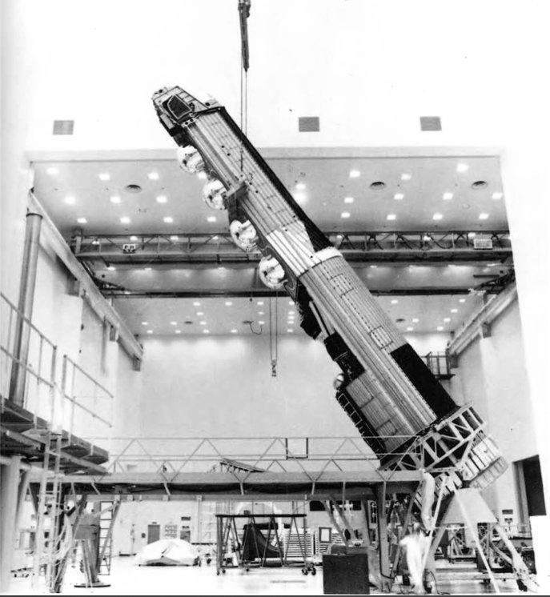
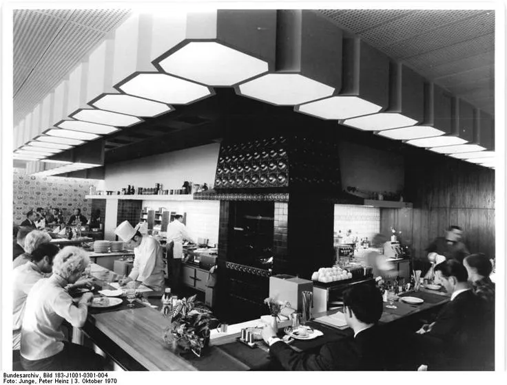
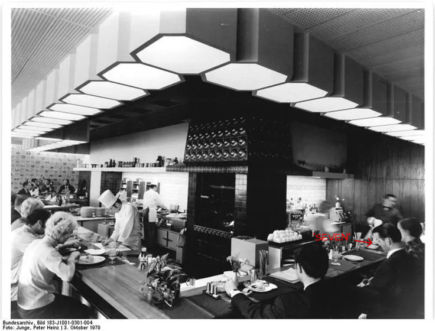
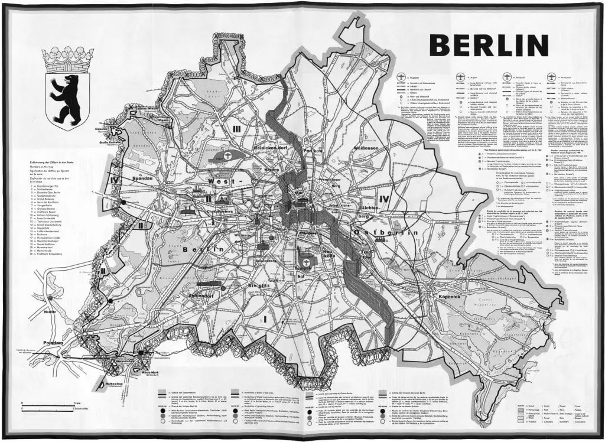
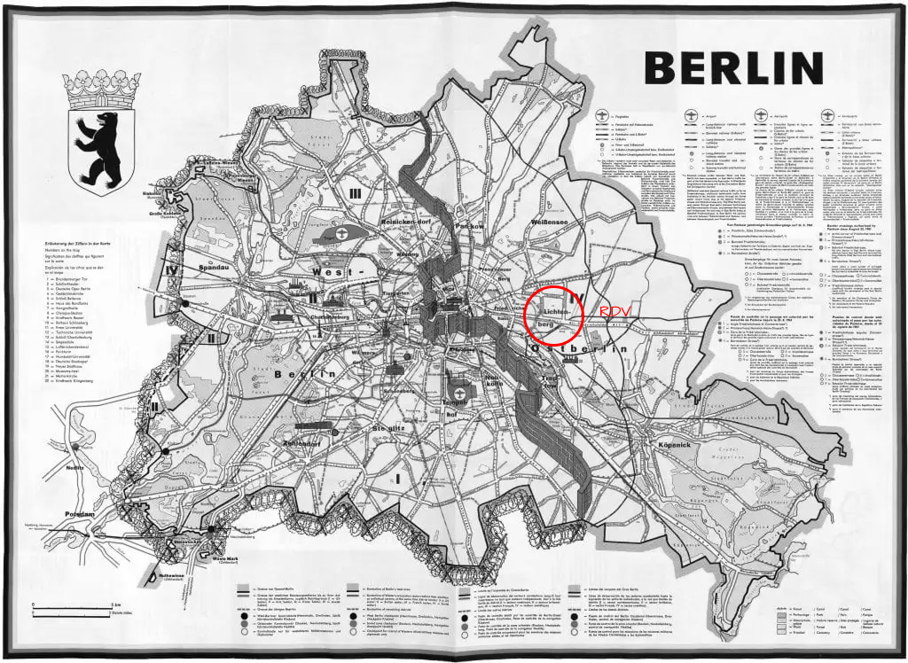

OFF
ON


ATTENTION : expérience uniquement disponible sur ordinateur.
> KERNEL WIRD INITIALISIERT...
> VIRTUELLE LAUFWERKE WERDEN EINGEHÄNGT...
> NEURONALE NETZE WERDEN GELADEN... OK
> SICHERHEITSPROTOKOLLE WERDEN ÜBERPRÜFT... UMGEHEN
> MISSIONSDATEIEN WERDEN ENTSCHLÜSSELT...
> VERBINDUNG HERGESTELLT.




Nous avons eu la surprise du contact d'un certain agent du nom de "Seven", de sa présentation. Il refuse de dénoncer son vrai nom pour l'instant, mais il nous fait part de plusieurs choses intéressantes, notamment qu'il vient de l'Ouest et qu'il fait partie d'une Task Force classifiée, qui s'occupe de la recherche et le développement d'une arme secrète utilisant l'élément 74. N'aimant pas le mode de vie de l'Ouest, il souhaite nous prêter allégance. Si ce qu'il dit est véridique, il pourrait être un atout considérable à l'ascension de l'Est.
Nous avons eu la surprise du contact d'un certain agent du nom de "Seven", de sa présentation. Il refuse de dénoncer son vrai nom pour l'instant, mais il nous fait part de plusieurs choses intéressantes, notamment qu'il vient de l'Ouest et qu'il fait partie d'une Task Force classifiée, qui s'occupe de la recherche et le développement d'une arme secrète utilisant l'élément 74. N'aimant pas le mode de vie de l'Ouest, il souhaite nous prêter allégance. Si ce qu'il dit est véridique, il pourrait être un atout considérable à l'ascension de l'Est.
Qui aurait cru que des signes extraterrestres existerait au sein de notre univers, mais surtout que l'on fasse cette découverte assez tôt. Il y a à peu près une quinzaine d'années, l'atterissage de ce que les américains croyait être un ballon-sonde dans la ville de Roswell, s'est avéré être un minerai extraterrestre qu'ils ont nommé "Element 74". Ce minerai a ouvert des portes pour une avancée tehnologique redoutable, ce qui les a permis d'avoir une avance sur nous, les Soviétiques. Grâce à des agents infiltrés aux Etats-Unis, nous avons réussi à mettre la main sur une partie de ce minerai à l'époque, ce qui fait que nous avons en partie annulé cet avantage. Les américains ne vont s'arrêter à rien pour gagner, et nous non plus. Selon le commandant, il y aurait une personne qui pourrait pencher la course à l'armement en notre faveur. J'attendrai de ses nouvelles.
Qui aurait cru que des signes extraterrestres existerait au sein de notre univers, mais surtout que l'on fasse cette découverte assez tôt. Il y a à peu près une quinzaine d'années, l'atterissage de ce que les américains croyait être un ballon-sonde dans la ville de Roswell, s'est avéré être un minerai extraterrestre qu'ils ont nommé "Element 74". Ce minerai a ouvert des portes pour une avancée tehnologique redoutable, ce qui les a permis d'avoir une avance sur nous, les Soviétiques. Grâce à des agents infiltrés aux Etats-Unis, nous avons réussi à mettre la main sur une partie de ce minerai à l'époque, ce qui fait que nous avons en partie annulé cet avantage. Les américains ne vont s'arrêter à rien pour gagner, et nous non plus. Selon le commandant, il y aurait une personne qui pourrait pencher la course à l'armement en notre faveur. J'attendrai de ses nouvelles.
Beau travail Four. Votre deuxième objectif consiste à découvrir le type d'armement que "Seven" est prêt à livrer aux communistes. Nous devons à tout prix le découvrir afin de contrer ces dangers si il est trop tard.
Le Haut Commandement de l'Est exigeait une arme de dissuasion absolue ; il était donc inévitable qu'ils sollicitent mon expertise. A partir de schémas fournis par "Seven" , j'ai pu répliquer une version du satellite HK9 Hexagon , modifiée par mes soins. J'ai converti ce simple outil d'observation en une plate-forme de frappe orbitale capable de dicter l'issue du conflit. L'appareil est désormais conçu pour abriter un râtelier de cylindres en tungstène massif. Sur simple impulsion, ces projectiles s'abattront depuis l'orbite terrestre , générant une force d'impact cinétique équivalente à une détonation thermonucléaire, mais vierge de toute retombée radioactive. Par ce projet, l'Est n'affirmera pas seulement sa force, il prouvera aussi sa domination technologique incontestable.
Dr. Werner Rohrbach
Le Haut Commandement de l'Est exigeait une arme de dissuasion absolue ; il était donc inévitable qu'ils sollicitent mon expertise. A partir de schémas fournis par "Seven" , j'ai pu répliquer une version du satellite HK9 Hexagon , modifiée par mes soins. J'ai converti ce simple outil d'observation en une plate-forme de frappe orbitale capable de dicter l'issue du conflit. L'appareil est désormais conçu pour abriter un râtelier de cylindres en tungstène massif. Sur simple impulsion, ces projectiles s'abattront depuis l'orbite terrestre , générant une force d'impact cinétique équivalente à une détonation thermonucléaire, mais vierge de toute retombée radioactive. Par ce projet, l'Est n'affirmera pas seulement sa force, il prouvera aussi sa domination technologique incontestable.
Dr. Werner Rohrbach
Je ne peux nier le génie du docteur Werner Rohrbach, son égoïsme en revanche ... J'ai travaillé avec lui sur le KH9 Hexagon et l'assemblage prend forme à une vitesse remarquable. Une photo a été prise afin d'avoir un signe d'archive pour d'éventuels futurs tests et références au futur. Si quelqu'un veut y jeter un coup d'oeil, la photo sera disponible dans les rapports supplémentaires.
Je ne peux nier le génie du docteur Werner Rohrbach, son égoïsme en revanche ... J'ai travaillé avec lui sur le KH9 Hexagon et l'assemblage prend forme à une vitesse remarquable. Une photo a été prise afin d'avoir un signe d'archive pour d'éventuels futurs tests et références au futur. Si quelqu'un veut y jeter un coup d'oeil, la photo sera disponible dans les rapports supplémentaires.

Beau boulot Four. Votre objectif a été accompli. Cependant, il y a une mention d'un certain projet, du nom de Fallguy. Je vous conseille d'y passer outre.
Le commandement soviétique doute encore de la loyauté absolue de "Seven". Il n'a pas envie de risquer l'Est de manière inutile. "Seven" a donc proposé une garantie, qu'on a décidé de nommer "Projet Fallguy". Pour prouver son allégeance, il s'engage à nous livrer un agent de l'Ouest, vivant, avec ses codes d'accès. Nous attendons que le spécimen vienne bien à nous. Une fois vérifié, le commandant approuvera avec certitude la loyauté de "Seven" envers l'Est. Lancement du projet Fallguy.
Le commandement soviétique doute encore de la loyauté absolue de "Seven". Il n'a pas envie de risquer l'Est de manière inutile. "Seven" a donc proposé une garantie, qu'on a décidé de nommer "Projet Fallguy". Pour prouver son allégeance, il s'engage à nous livrer un agent de l'Ouest, vivant, avec ses codes d'accès. Nous attendons que le spécimen vienne bien à nous. Une fois vérifié, le commandant approuvera avec certitude la loyauté de "Seven" envers l'Est. Lancement du projet Fallguy.
> CONNEXION INTERROMPUE
> UNITÉS D'INTERVENTION EN ROUTE.
AGENT FOUR : COMPROMIS.